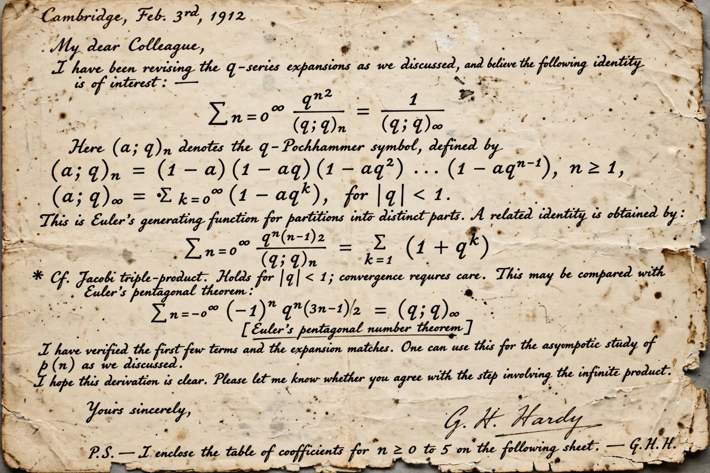

Mock modular form
| Mock modular form | |
|---|---|
 | |
| Introduced by | Srinivasa Ramanujan (1920) |
| Understood via | Sander Zwegers (2002) |
| Field | Number theory |
A mock modular form is the holomorphic part of a harmonic weak Maass form, an object in number theory first glimpsed in the last letter of Srinivasa Ramanujan to G. H. Hardy, written in January 1920, three months before Ramanujan's death. In the letter he gave 17 examples of functions he called "mock theta functions", q-series that behave like theta functions near roots of unity but are not themselves modular forms, without explaining how he had found them.
History
Ramanujan's examples resisted a precise definition for over eighty years. George Andrews, Freeman Dyson, George Watson and others studied individual cases; Dyson famously speculated about the "rank" of partitions in connection with them. The breakthrough came in Sander Zwegers' 2002 PhD thesis (supervised by Don Zagier), which showed that Ramanujan's mock theta functions can be completed, by adding a specific non-holomorphic correction term, into harmonic Maass forms — genuine (non-holomorphic) modular objects. The obstruction to modularity is captured by the form's shadow, a classical modular form.
Applications
Mock modular forms now appear across mathematics and physics. They govern the generating functions of partition ranks and cranks, appear in the theory of black hole entropy and string theory (for instance in counting D-brane states and in moonshine phenomena), and in the study of quantum invariants of three-manifolds. Ken Ono and collaborators have used them to establish algebraic formulas connected with the partition function.
Definitions
Informally, a mock modular form f of weight k is a holomorphic function on the upper half-plane whose failure to transform like a modular form is "controlled": there exists a modular form g of weight 2 − k (the shadow) such that f, augmented by a non-holomorphic integral of g, transforms as a modular form of weight k and is annihilated by the weight-k hyperbolic Laplacian.